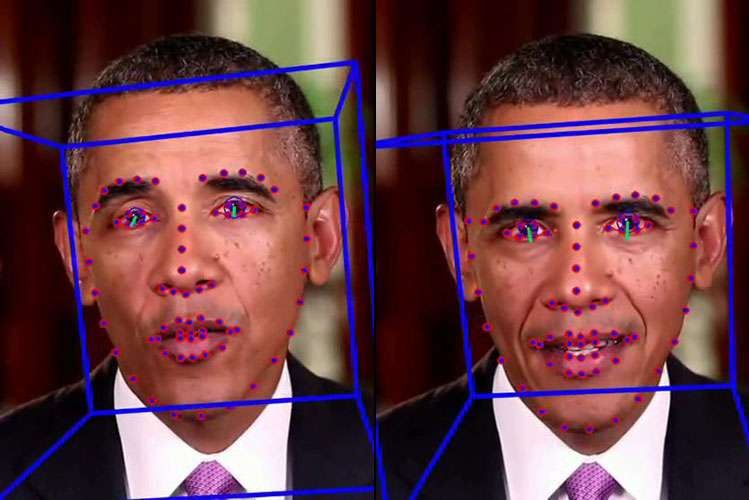

Hoe maakt AI nepnieuws?
AI (Kunstmatige Intelligentie) is software die leert van grote hoeveelheden data.
AI (Kunstmatige Intelligentie) is software die leert van grote hoeveelheden data.
Voorbeeld
ChatGPT kan een nep nieuwsartikel schrijven dat eruitziet alsof het echt is.
Voorbeeld
In 2022 verscheen een nepvideo van de Oekraïense president Zelensky.
Voorbeeld
AI kan stemmen kopiëren zodat oplichters iemand kunnen laten klinken als een echt persoon.Voorbeeld
Oplichters gebruikten AI-stemmen van bekende mensen om geld te vragen aan familieleden.